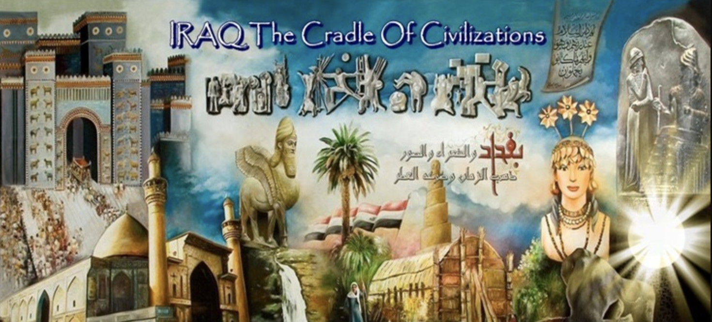
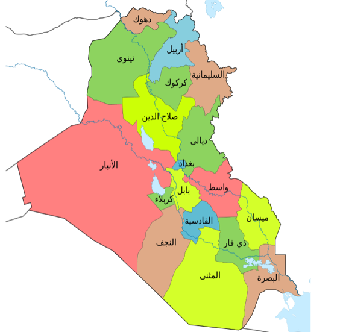
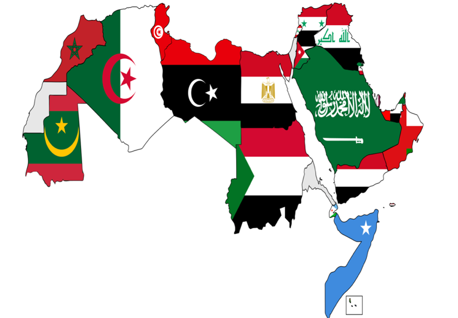

العراق
الخرِيطة الثامِنة Map 8


المحتوياتالمفردات (Vocabulary)
الموقع (Location)
البنية الاجتماعية (Social structure)
السياسة ونظام الحكم (Regime Political System)
الاقتِصاد (Economy)
التاريخ (History)
التراكيب اللغوية (Grammatical Structure)
النّسبة والنَّسَب (The Nisba Adjective)
أنواع اللام / لــ (The Meaning &Function of)
المَبني للمجهول (Passive Voice)
المناقشة وأسئلة الاستيعاب (Discussion & Comprehensive Questions)
الثقافة (Culture)
مشروع وتقديم (Project & Presentation)
المناقشة وأسئلة الاستيعاب (Discussion & Comprehensive Questions)
اختر الإجابة الصحيحة من القائمة المنسدلة لكل سؤال.

هذا هو العلَميَقعُ هذا البلد ________ الجزيرة العربيَّة.
عاصِمة هذا البلد هي ________
يَتكلّمُ سُكّان هذا البلد اللغة ________
هذا البلد ________